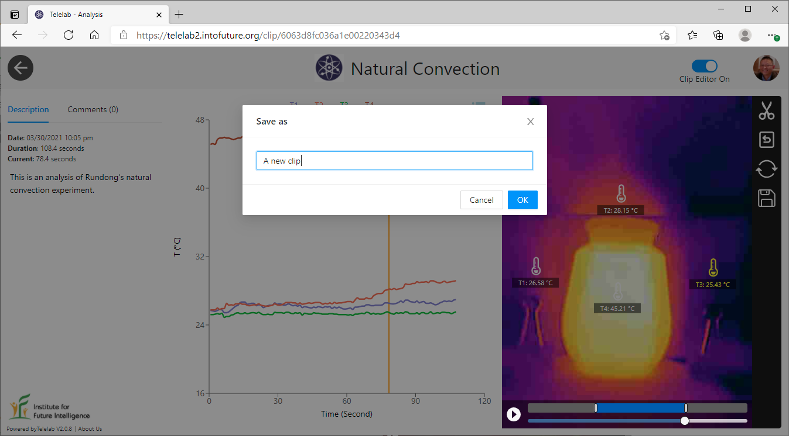
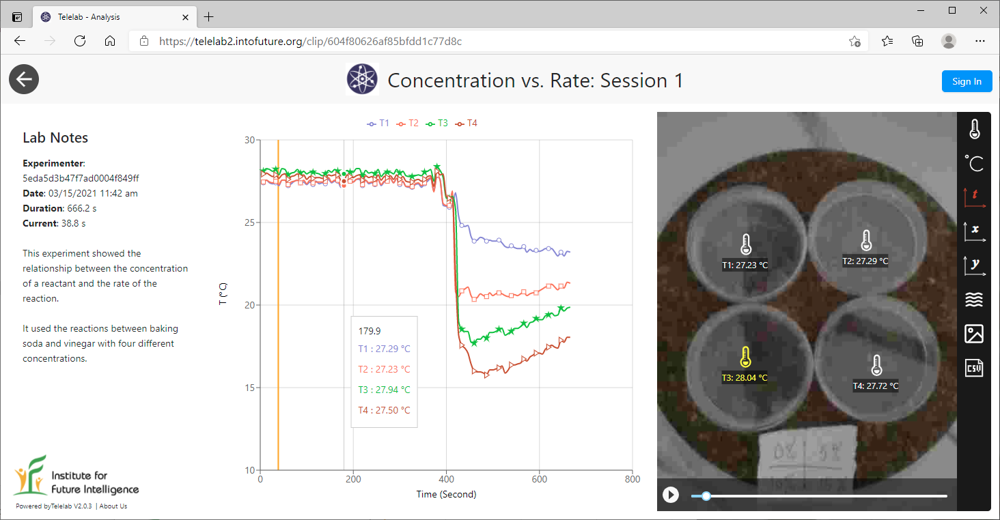
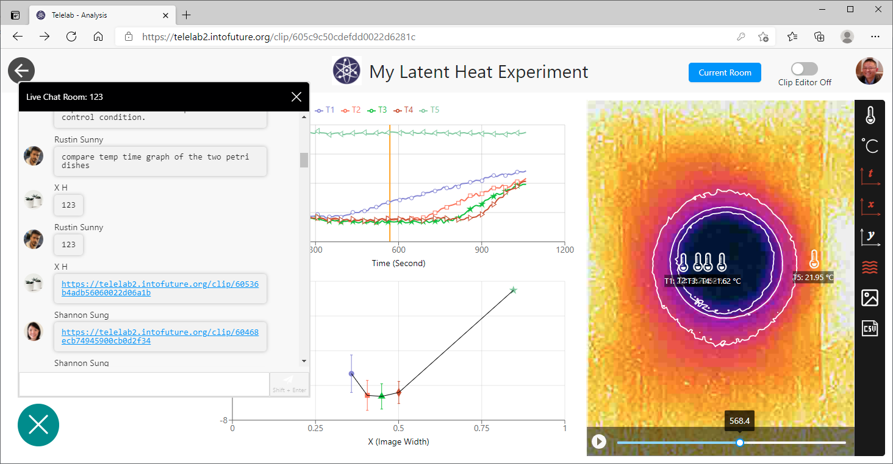
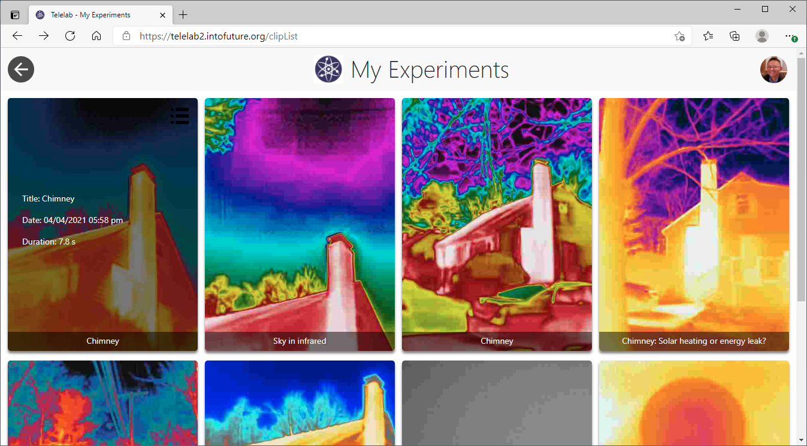
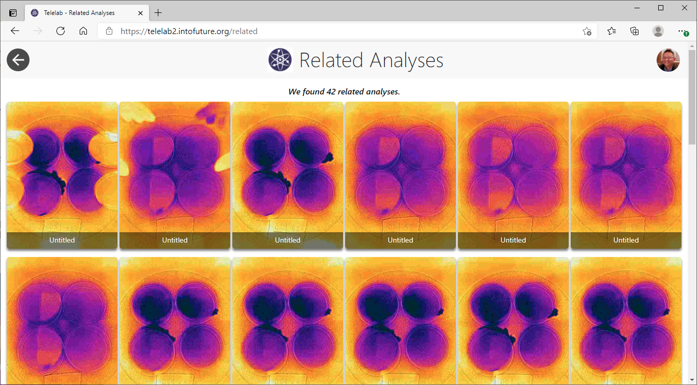
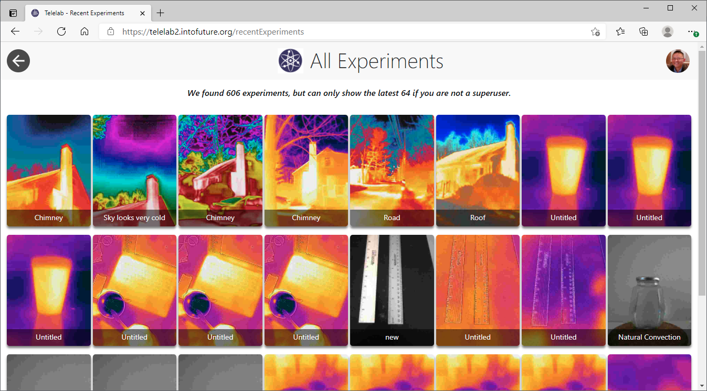
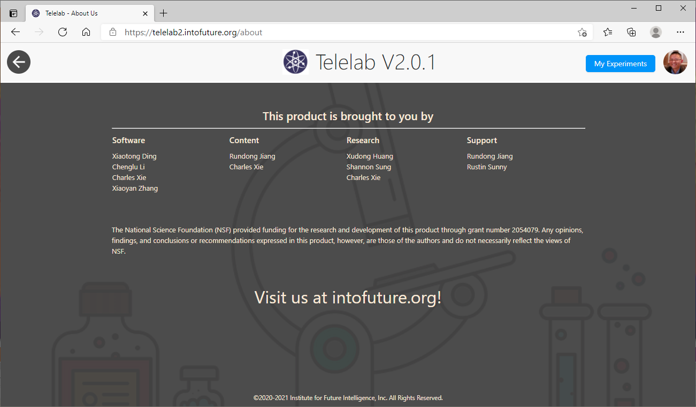

Telelab version 2.0
Cloud-saved experiments, an editable clip format, and a much-easier way to share real-time science with anyone in the world.
March 25, 2021
We are pleased to announce the release of a new milestone of Telelab — Version 2.0. This version has many new features that make participating in and sharing of an experiment much easier. For example, all the experiments streamed through it are now automatically stored in a cloud database for users to retrieve and analyze later. This solves a critical problem: an experiment may happen too fast or contain too many fleeting details for anyone to follow and analyze in real time. With this new capability, students can concentrate on observing the experiment and paying attention to instruction in the livestreaming mode, leaving careful analysis to a later stage. An experiment saved in the cloud can also be easily shared with anyone for further analysis, allowing different interpretations of the results to be discussed. This version is being rolled out to a few pilot schools across the country, serving more than a hundred students in North Carolina and Oregon as of March.
Telelab may be a useful tool for learning and teaching science. But let's dream big. With these new capabilities enabled by the Internet of Things, we now have a platform that can preserve every single experiment ever conducted on it. If each experiment represents an exploration around a certain point in the vast problem space of science and is valuable in its own way, we now have a "big data" technology for crowdsourcing science — if we can sum them up to address bigger questions!
How much data do you get via Telelab?
If you are using a thermal camera such as the FLIR ONE Pro with Telelab,
you get a 160×120 array of temperature values five times per
second (in addition to images). That is 96,000 raw data points in the
blink of an eye, and in about ten seconds you have a million data
points arriving at your computer.
Editing and analyzing your experiments
In Telelab, an experiment is streamed as a "clip" of image and sensor data with duration ranging from minutes to hours. Using the Clip Editor of the new version, users can extract segments of interest from a long clip to create a shorter one.

A clip contains a large quantity of experimental data that requires careful analysis. In Telelab, we have developed various analysis and graphing tools to support users in making sense of their data in both the temporal and spatial dimensions.

You may be interested in knowing that the above link points to an actual remote experiment conducted recently as a pilot test for a high school in Oregon.
Like in the previous version, users can interact with others through online chat in the livestreaming mode. Once they go to the analysis mode, this communication channel remains open for them to exchange ideas with others.

Saving and sharing your experiments
All clip pages that users create are stored in their accounts and can be revisited and revised at any time on any computer. Telelab also keeps a history of the clip pages that you have viewed.

A clip page can be shared with anyone by just sending its URL. The viewer need not register with Telelab to access the experiment, as shown by the links above. While a user with whom you share an experiment can view and interact with it, any changes they make cannot be saved to your original experiment. To save changes, they can make a copy by creating a new clip out of your original one using the Clip Editor. This lets your experimental data be shared with an unlimited number of people.
Browsing experiments by others
One of the interesting things in science is that people may interpret an experimental result differently based on alternative analysis methods and theories. In Telelab, a user can access analysis pages based on the same experiment.

In addition, superusers such as an administrator or a researcher can view all the experiments submitted by users.

About the team
Last but not least, we would like to thank everyone in our great team for putting all these together and reaching out to schools around the country.
